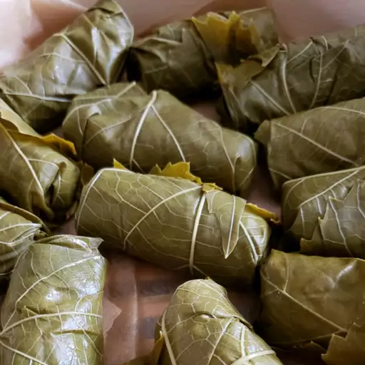

Dolmas

Description
Dolma is a type of cabbage roll, popular in the culinary traditions of Transcaucasia,
the Middle East and the Balkans. The filling consists of rice and minced meat
wrapped in grape leaves. The dish is usually served hot with sour cream,
or yogurt and garnished with herbs.
Ingredients
- ½ pound ground lamb
- ½ cup uncooked long grain rice
- ¼ cup olive oil
- 2 tablespoons chopped fresh mint
- 1 tablespoon dried currants
- 1 tablespoon pine nuts
- 1 ½ teaspoons kosher salt
- 1 teaspoon ground black pepper
- ½ teaspoon ground cumin
- ¼ teaspoon ground cinnamon
- ¼ teaspoon dried oregano
- 1 large egg
- 1 (16 ounce) jar grape leaves
- 1 tablespoon olive oil
- juice of one lemon
- 4 cups hot chicken broth
- 2 teaspoons olive oil, or as desired